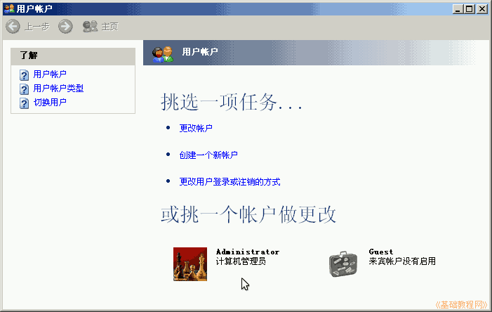
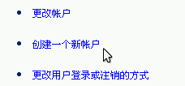
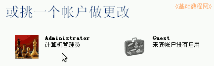
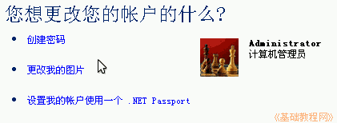

控制面板基础教程
作者：TeliuTe 来源：基础教程网
用户账户中，可以新增用户，更改用户的属性，登录方式等，下面我们来看一个练习；
1、用户账户
1）进入经典视图，点“用户账户”图标出来一个面板；
2）面板里列出系统自动创建的两个用户，一个是Administrator管理员，一个是Guest来宾，前者权限最高，后者最低；

2、使用
1）点中间的“创建一个新账户”，可以新增一个计算机用户，根据提示一步一步完成；

2）要更改一个账户，在下面的用户列表里点击进入；

3）在接下来的任务里，有设置密码，更改图片等，选择一个即可；

4）要删除一个用户，需要到“管理工具-计算机管理-本地用户和组-用户”中删除；
本节学习了用户账户的基础知识，如果你成功地完成了练习，请继续学习下一课内容；
本教程由86团学校TeliuTe制作|著作权所有
基础教程网：http://teliute.org/
美丽的校园……
转载和引用本站内容，请保留版权信息和本站链接。